- Módulo: Sistemas Operativos
- Título del trabajo: A4: PDC Políticas o directivas de grupo
- Componentes del grupo: Alejandro Ortega Freire
- Curso Académico: 2013/2014
- Fecha de entrega: 12 de mayo de 2014
1.- Políticas o directivas de grupo
- Leer/consultar la documentación que se proporciona. Concretamente el fichero M34_directivas_grupos.pdf (Se puede descargar desde "Documentación/Win2008Server").
- Trabajo individual con entrega en plantilla HTML, vía repositorio GITHUB.
- Máquinas Virtuales: se emplearán las mismas MV que en la anterior práctica (A1: PDC WinServer).Es decir:
- MV1 con SO Windows 2008 Server Enterprise que tendrá dirección IP 172.16.108.111 y nombre ORTEGA1.
- MV2 con SO Windows 7 que tendrá dirección IP 172.16.108.211 y nombre ORTEGA2A.
- MV3 con SO Windows 7 que tendrá dirección IP 172.16.108.11 y nombre ORTEGA2B.
- La MV1 tendrá instalada la función de controlador del dominio ORTEGA1W.IDP y las MV's 2 y 3 serán máquinas clientes desde las cuales pueden acceder los diferentes usuarios del dominio.
- Los usuarios definidos en el dominio se dividen en dos grupos:
- GRUPO JEDI:"obiwan", "quigon" y "yoda".
- GRUPO SITH:"emperador", "maul" y "vader".
2.- Objetivo
- Establecer unas directivas para la OU (Unidad Organizativa) "JEDI", y otras diferentes para la OU "SITH".
 Principio del punto 1 |
Principio del punto 1 |  Fin del punto 3 |
Fin del punto 3 |  Índice
Índice
3.- Unidades Organizativas (OU)
3.1- Creación de las Unidades Organizativas
- Crearemos dos Unidades Organizativas (OU) distintas: JEDI y SITH. Para ello accedemos a las Herramientas administrativas del Panel de Control y hacemos doble clic sobre Usuarios y Equipos de Active Directory, y en la ventana que se muestra a continuación, nos ubicaremos sobre el dominio ORTEGA1W.IDP, pulsando sobre él con el botón derecho del ratón, para seleccionar la opción Nuevo y posteriormente Unidad organizativa.
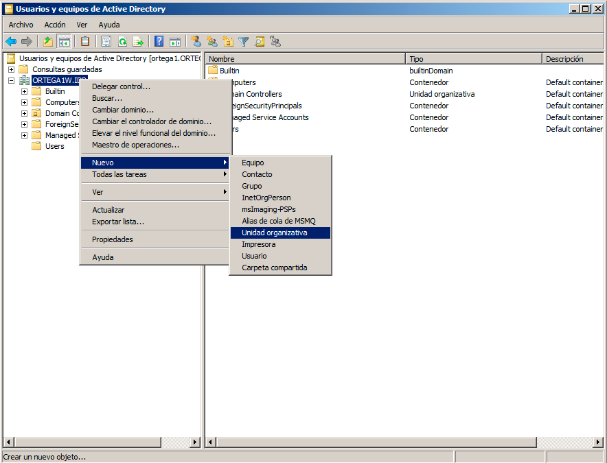
Imagen 1: Nueva Unidad Organizativa.
- En la nueva ventana mostrada dejaremos activada la casilla Proteger contenedor contra eliminación accidental, y tras ello en la caja de texto "Nombre" indicaremos el nombre que deseamos asignar a nuestra unidad organizativa, en este caso "JEDI" y "SITH", tal y como vemos en la imágenes inferiores, tras lo cual pulsaremos sobre el botón Aceptar en dicha ventana.
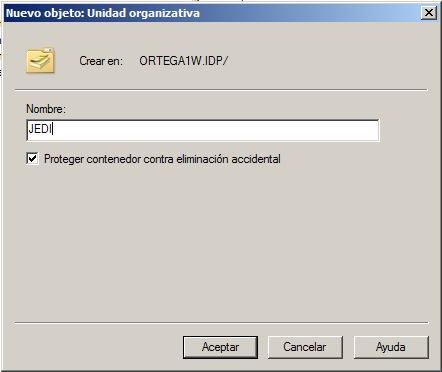
Imagen 2: Crear OU JEDI.
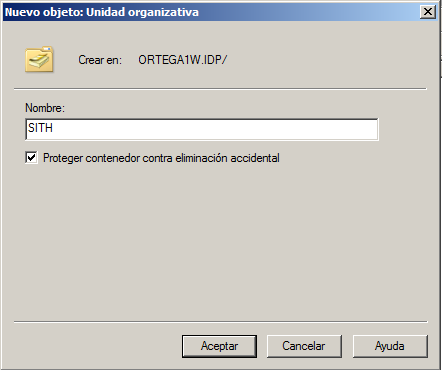
Imagen 3: Crear OU SITH.
- Tras este paso en la ventana de Usuarios y Equipos de Active Directory, el árbol del dominio aparecen las Unidades Organizativas "JEDI" y "SITH", como se muestra en la siguiente imagen.
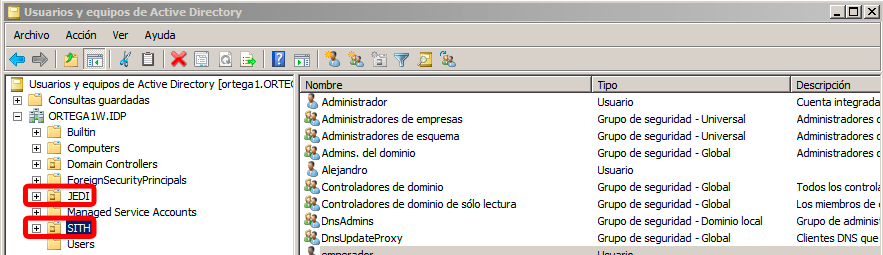
Imagen 4: OU creadas.
3.2- Añadir usuarios a las OU
- Una vez creadas las unidades organizativas correspondientes, procederemos a mover los usuarios oportunos a las unidades organizativas donde deseamos colocarlos, esto es, los usuarios "obiwan", "quigon" y "yoda" a la unidad organizativa JEDI, y los usuarios "emperador", "maul" y "vader" a la unidad organizativa SITH.
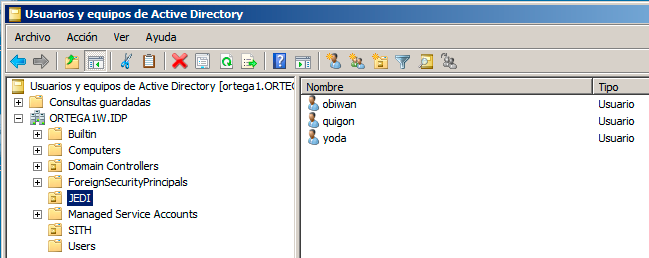
Imagen 5: Usuarios de la OU JEDI.

Imagen 6: Usuarios de la OU SITH.
Principio del punto 3 | Fin del punto 4 | Índice
4.- Políticas o directivas de grupo
4.1- Creación de Directivas de grupo
- En primer lugar deberemos situarnos sobre la unidad organizativa sobre la que queremos interactuar (JEDI o SITH en este caso), y sobre ella pulsar con el botón derecho del ratón para seleccionar la opción Crear un GPO en este dominio y vincularlo aquí en el desplegable correspondiente, para proceder a crear directiva de grupo asociada a esta unidad organizativa.
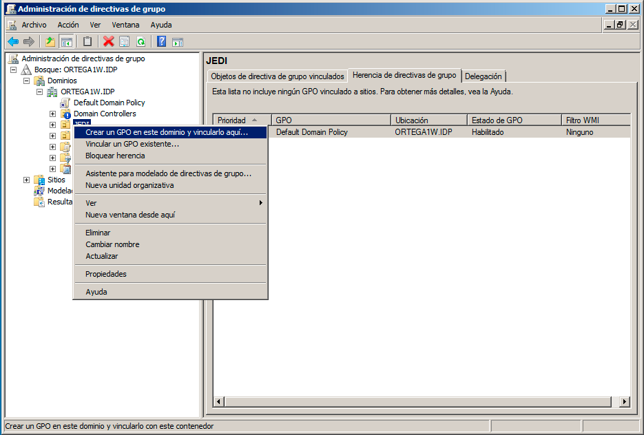
Imagen 7: Creación de Directivas de grupo.
- En la nueva ventana mostrada como resultado de la acción anterior, teclearemos en la caja de texto "Nombre", el nombre con el que deseamos reconocer a la nueva directiva de grupo - Directiva de Grupo JEDI y Directiva de Grupo SITH respectivamente - tal y como vemos en la imágenes inferiores, tras lo cual en ella pulsaremos sobre el botón Aceptar.
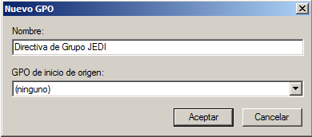
Imagen 8: Directiva de Grupo JEDI.
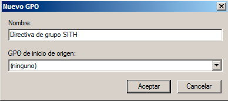
Imagen 9: Directiva de Grupo SITH.
- Una vez completadas las acciones anteriores, podremos comprobar la existencia de dos nuevas GPO de nombres Directiva de Grupo JEDI y Directiva de Grupo SITH, en sus correspondientes unidades organizativas.
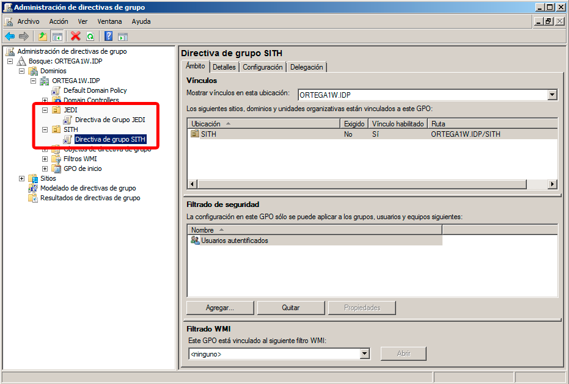
Imagen 10: Directivas de Grupo creadas.
4.2- Configurar Directivas de grupo
- Una vez que ha sido creada las Directivas de Grupo, procederemos a su edición pulsando sobre ella con el botón derecho del ratón para elegir la opción Editar en el desplegable correspondiente, tal y como vemos en la imagen inferior.
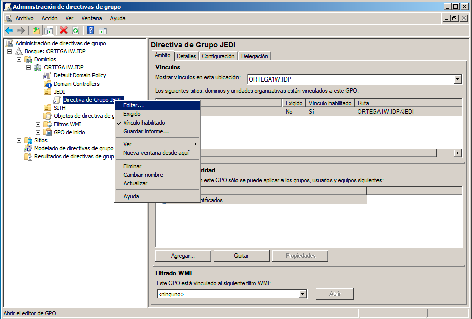
Imagen 11: Editar Directivas de grupo.
- Como resultado de la acción anterior se muestra el editor de administración de directiva de grupo con las configuraciones propias de la directiva Directiva de grupo seleccionada.
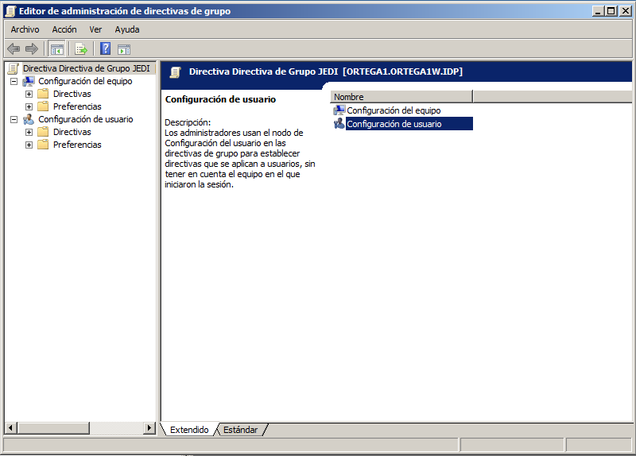
Imagen 12: Editar Directivas de grupo.
4.3- Ejemplos de directivas
- En el Editor de objetos de Directiva de grupo, buscar la Directiva de grupo que queremos modificar y hacemos doble clic. En el cuadro de diálogo Propiedades, cambiamos la configuración y Aceptar.
- A continuación se muestran una serie de ejemplos de directivas aplicadas a la OU "JEDI" y a la OU "SITH" con el resultado de su aplicación.
DIRECTIVAS DE LA OU JEDI
Quitar el menú Ejecutar del menú Inicio
- Ubicación: Configuración de usuario / Plantillas administrativas / Menú Inicio y barra de tareas (User configuration / Administrative Templates / Start Menu and Taskbar)
- Configuración de Directiva de grupo: Quitar el menú Ejecutar del menú Inicio (Remove Run menu from Start Menu)
- Opción Habilitada
- Habilitar la directiva
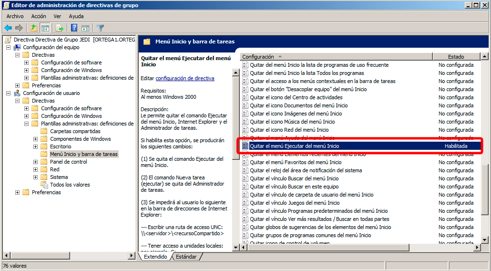
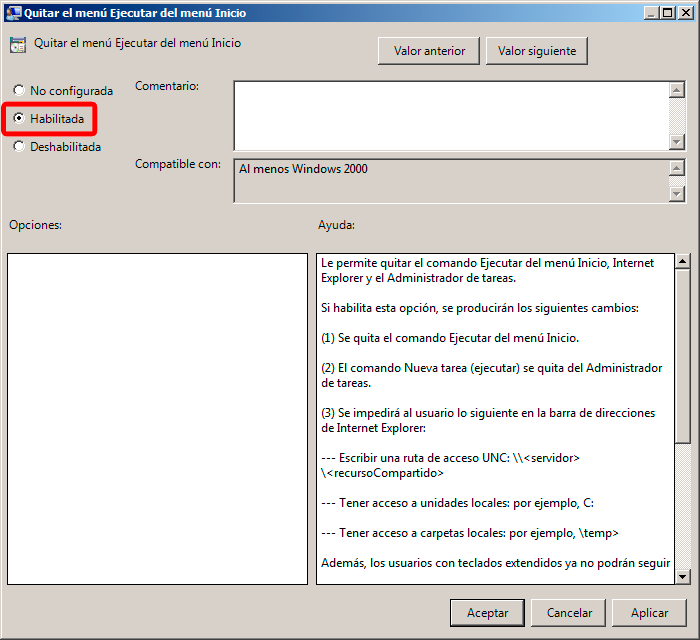
Imágenes 13 y 14: Habilitar la directiva.
- Comprobar su funcinamiento
- En las dos imágenes inferiores (15 y 16) se muestra como el usuario "yoda" que forma parte de la OU "JEDI" no puede habilitar el Comando Ejecutar en el Menú Inicio. En cambio, el usuario "emperador" que forma parte de la OU "SITH", sí puede habilitar esta opción pues no le afecta la anterior directiva de grupo.
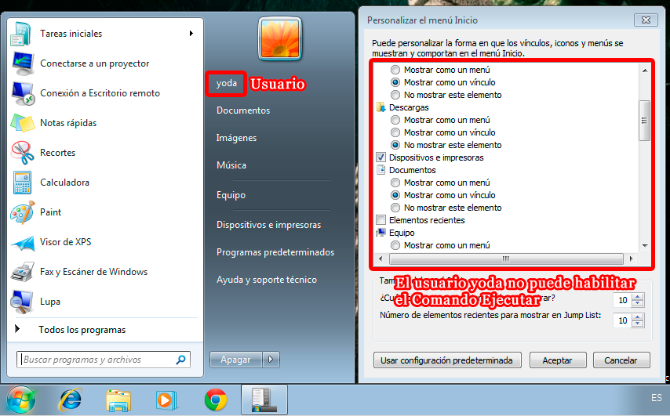
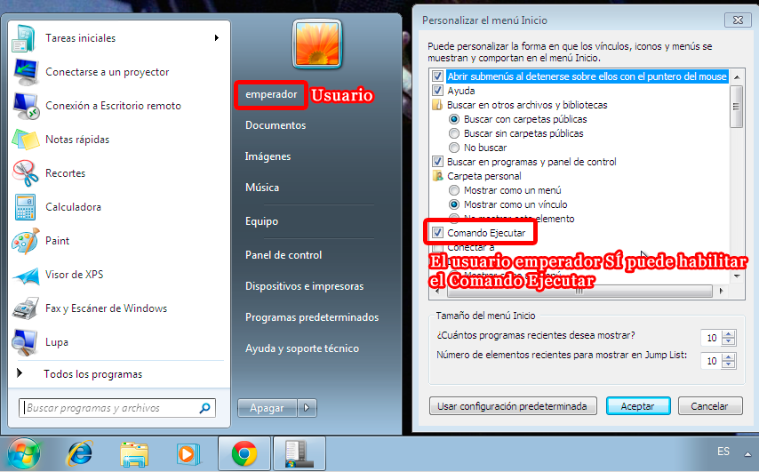
Imágenes 15 y 16: Resultado de habilitar la directiva.
Prohibir el acceso al Panel de control
- Ubicación: Configuración de usuario / Plantillas administrativas / Panel de control (User configuration / Administrative Templates / Control Panel)
- Configuración de Directiva de grupo: Prohibir el acceso al Panel de control (Prohibit access to the Control Panel)
- Opción Habilitada
- Habilitar la directiva
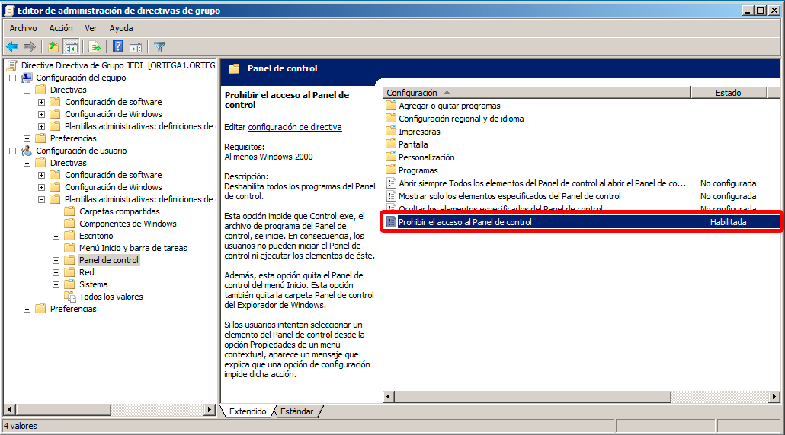
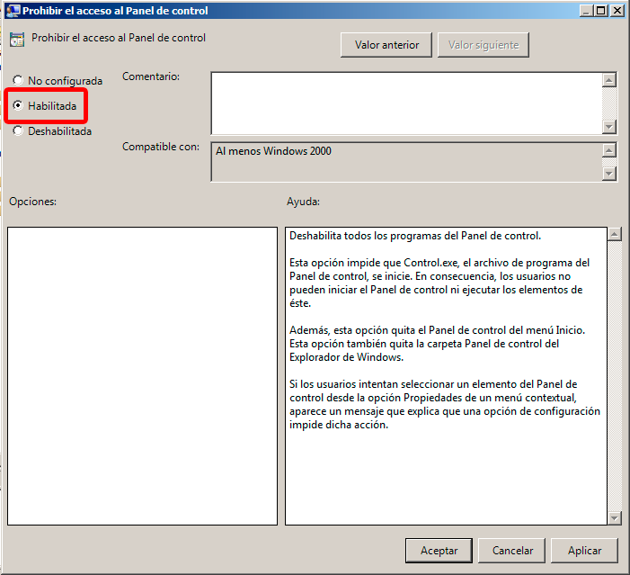
Imágenes 17 y 18: Habilitar la directiva.
- Comprobar su funcinamiento
- En las dos imágenes inferiores (19 y 20) se muestra como el usuario "yoda" no puede acceder al Panel de control, y en cambio el usuario "emperador" sí puede, pues no le afecta la anterior directiva de grupo.
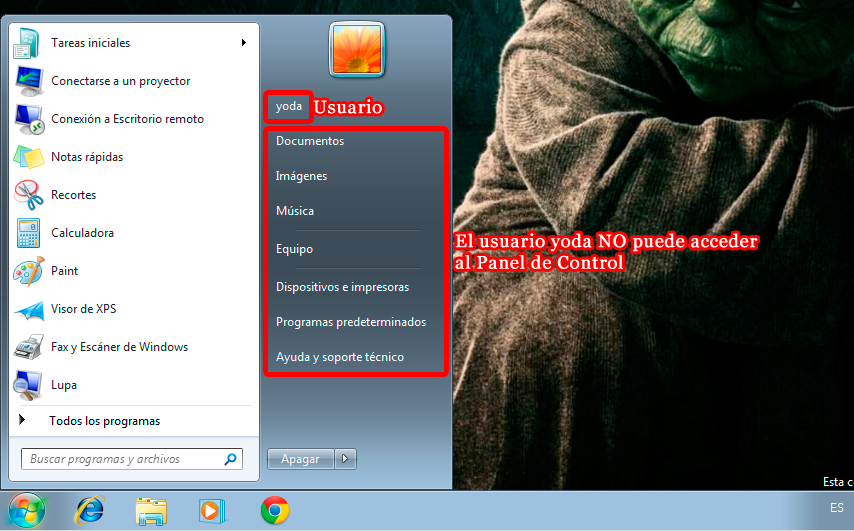
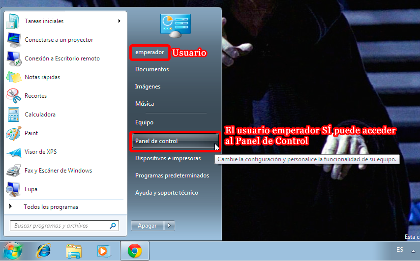
Imágenes 19 y 20: Resultado de habilitar la directiva.
Ocultar el icono Mis sitios de red del escritorio
- Ubicación: Configuración de usuario / Plantillas administrativas / Escritorio ( User configuration / Administrative Templates / Desktop)
- Configuración de Directiva de grupo: Ocultar el icono Mis sitios de red del escritorio (Hide My Network Places icon on desktop)
- Opción Habilitada
- Habilitar la directiva
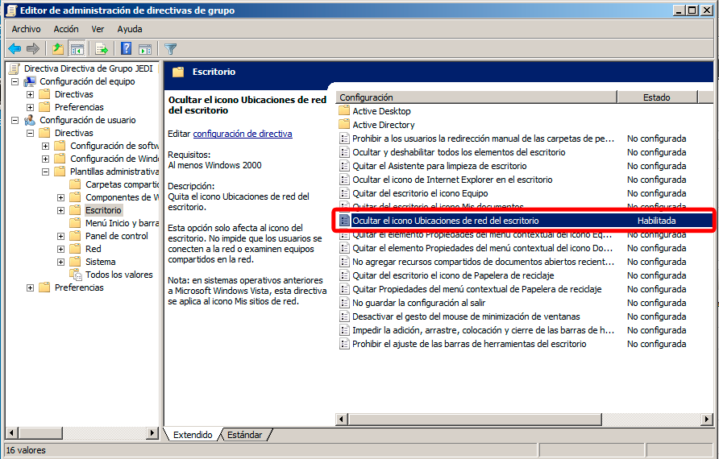
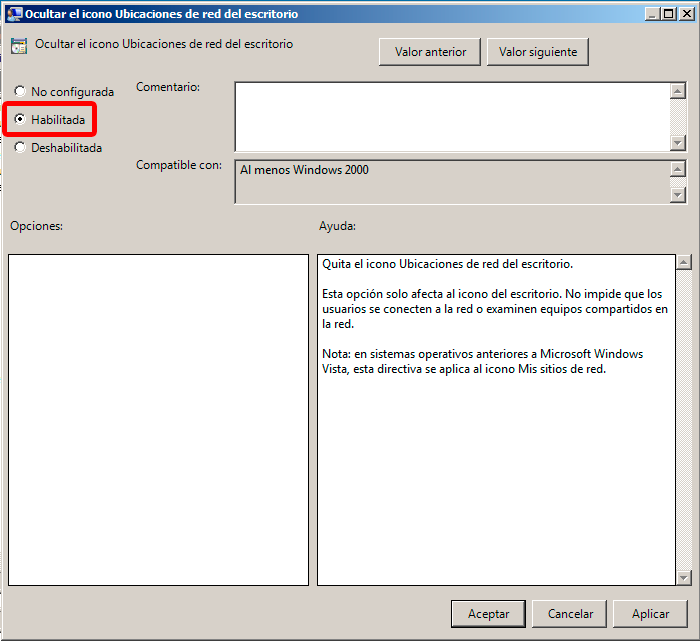
Imágenes 21 y 22: Habilitar la directiva.
- Comprobar su funcinamiento
- En las dos imágenes inferiores (23 y 24) se muestra como el usuario "yoda" no puede habilitar en el escritorio el icono de Red, y en cambio el usuario "emperador" sí puede, pues no le afecta la anterior directiva de grupo.
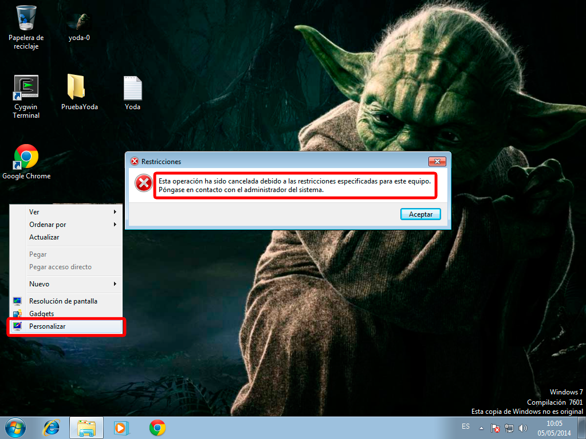
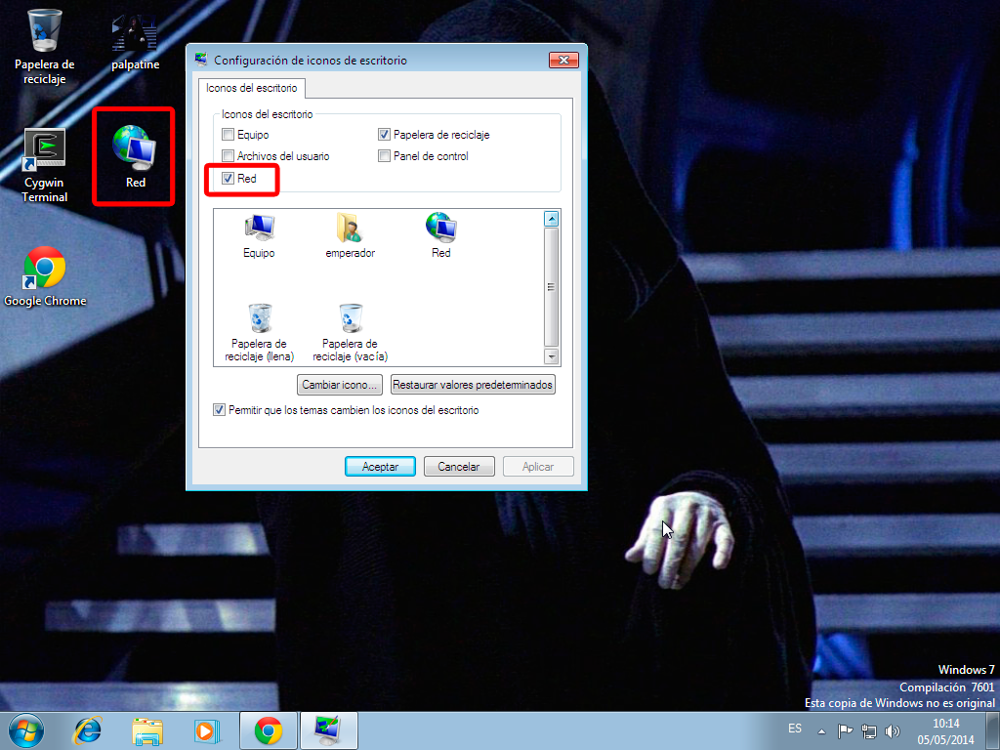
Imágenes 23 y 24: Resultado de habilitar la directiva.
Quitar Conexiones de red del menú Inicio
- Ubicación: Configuración de usuario / Plantillas administrativas / Menú Inicio y barra de tareas (User configuration / Administra tive Templates / Start Menu and Taskbar)
- Configuración de Directiva de grupo: Quitar Conexiones de red del menú Inicio (Remove Network Connections from the Start Menu)
- Opción Habilitada
- Habilitar la directiva
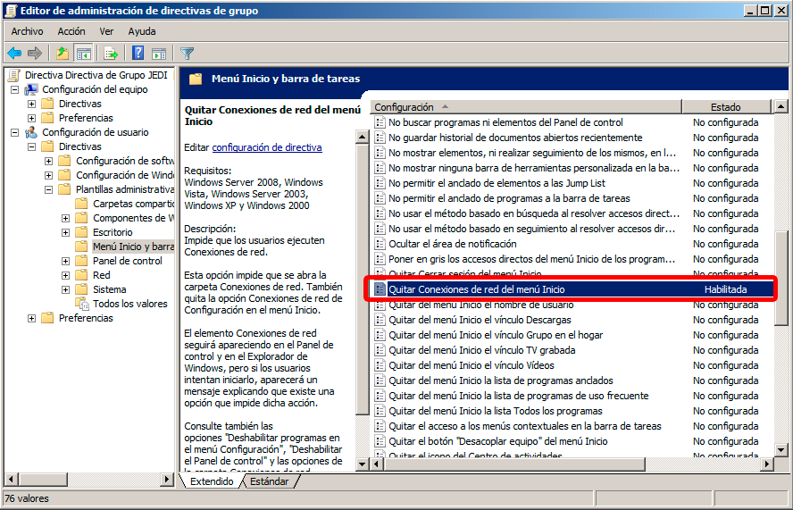
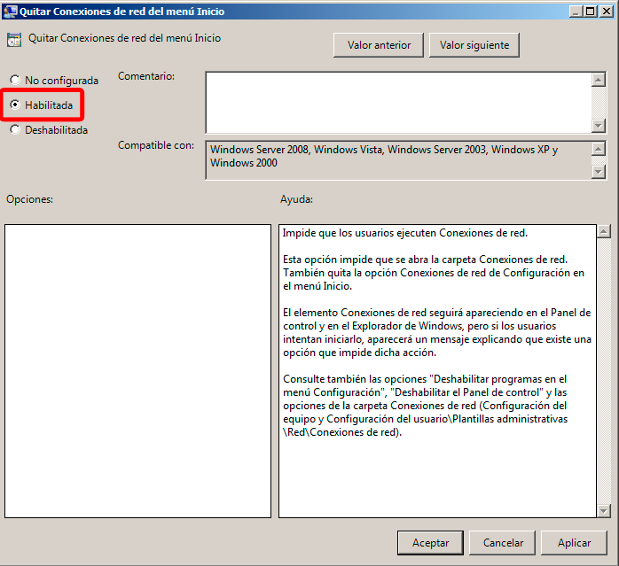
Imágenes 25 y 26: Habilitar la directiva.
- Comprobar su funcinamiento
- En las dos imágenes inferiores (27 y 28) se muestra como el usuario "yoda" no puede acceder a las Conexiones de red a través del Menú Inicio, y en cambio el usuario "emperador" sí puede, pues no le afecta la anterior directiva de grupo.
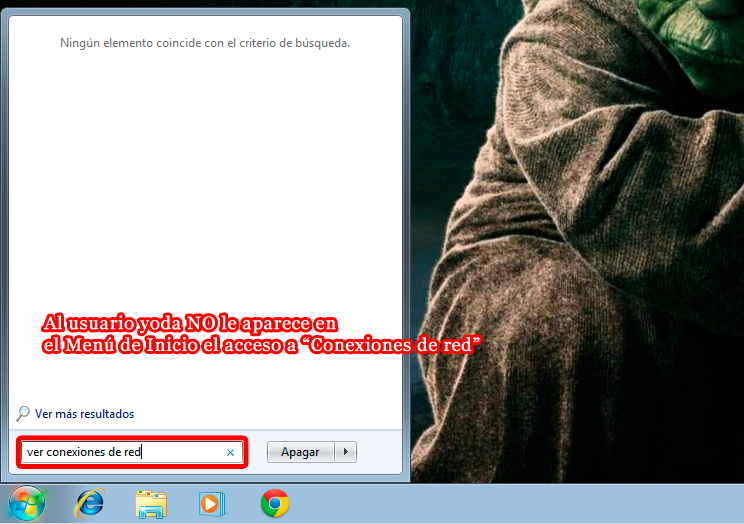
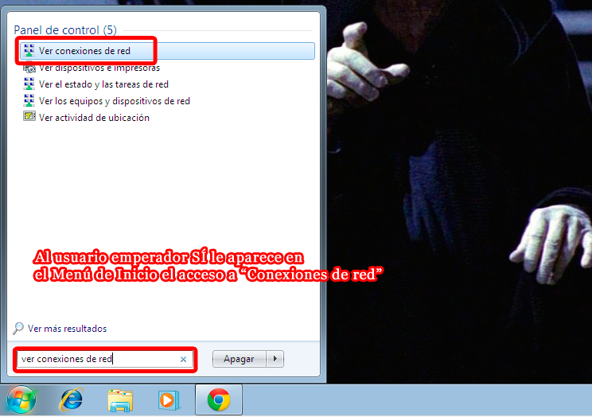
Imágenes 27 y 28: Resultado de habilitar la directiva.
DIRECTIVAS DE LA OU SITH
Quitar el icono Mis sitios de red del menú inicio
- Ubicación: Configuración de usuario / Plantillas administrativas / Menú Inicio y barra de tareas (User configuration / Administrative Templates / Start Menu and Taskbar)
- Configuración de Directiva de grupo: Quitar el icono Mis sitios de red del men ú Inicio (Remove My Network Places icon from Start Menu)
- Opción Habilitada
- Habilitar la directiva
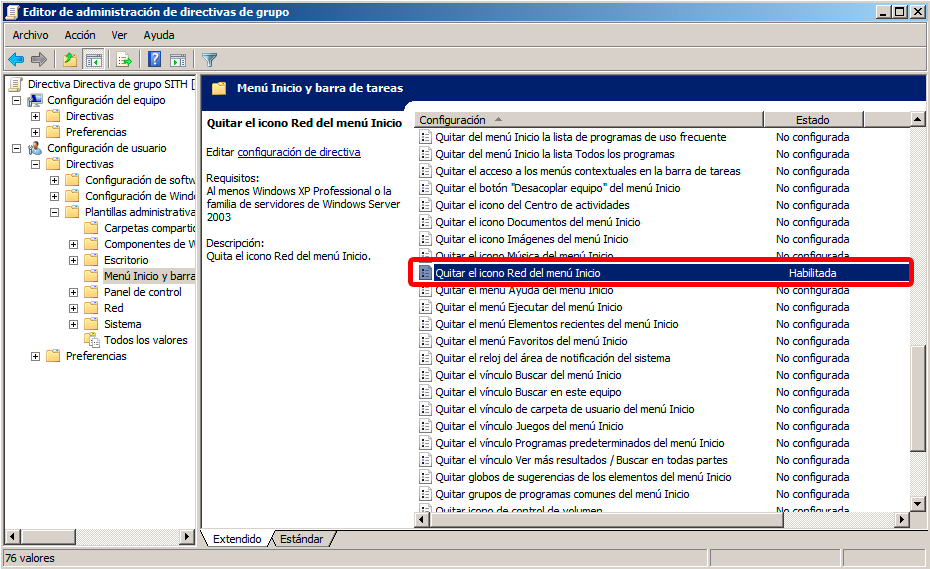
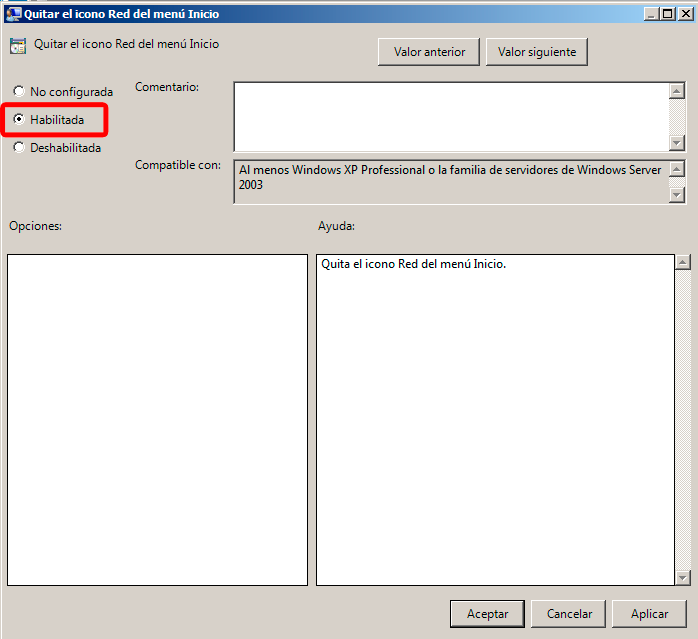
Imágenes 29 y 30: Habilitar la directiva.
- Comprobar su funcinamiento
- En la imagen inferior se muestra como el usuario "emperador" que forma parte de la OU "SITH" no puede acceder a "Mis sitios de red" a través del Menú Inicio.
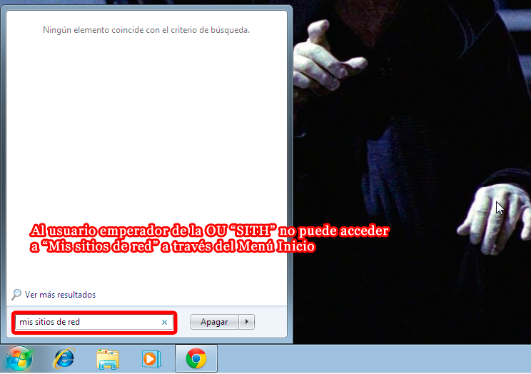
Imagen 31: Resultado de habilitar la directiva.
Ocultar unidades específicas en Mi PC
- Ubicación: Configurac ión de usuario / Plantillas administrativas / Componentes de Windows / Explorador de Windows (User configuration / Administrative Templates / Windows Components / Windows Explorer)
- Configuración de Directiva de grupo: Ocultar estas unidades específicas en Mi PC (Hide these specified drives in My Computer) o Impedir el acceso a las unidades desde Mi PC (Prevent Access to drives from my computer)
- Opción Habilitada. Elegir un combinación adecuada como bloquear las unidad D.
- Habilitar la directiva
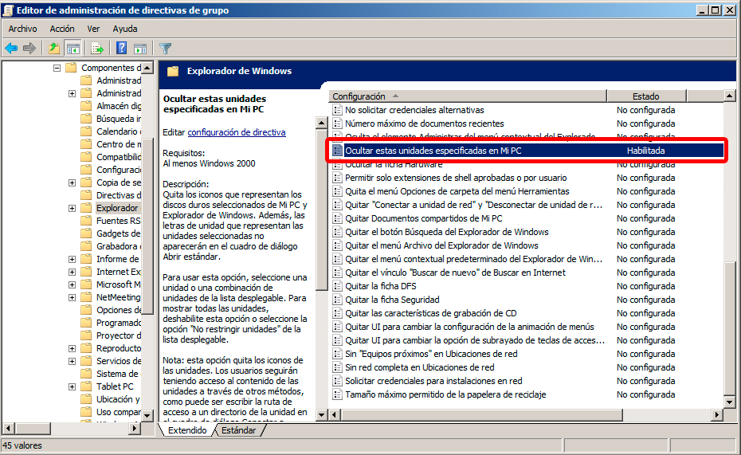
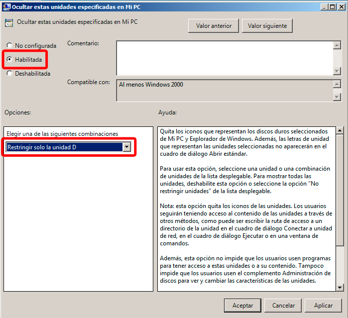
Imágenes 32 y 33: Habilitar la directiva.
- Comprobar su funcinamiento
- En las dos imágenes inferiores (34 y 35) se muestra como el usuario "emperador" no puede acceder a la unidad D:, y en cambio el usuario "yoda" sí puede, pues no le afecta la anterior directiva de grupo.
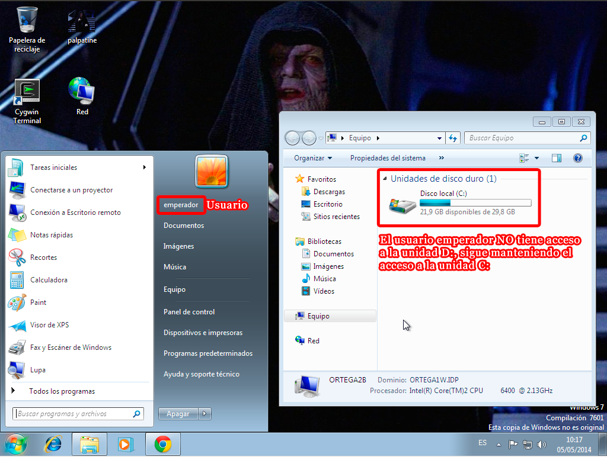
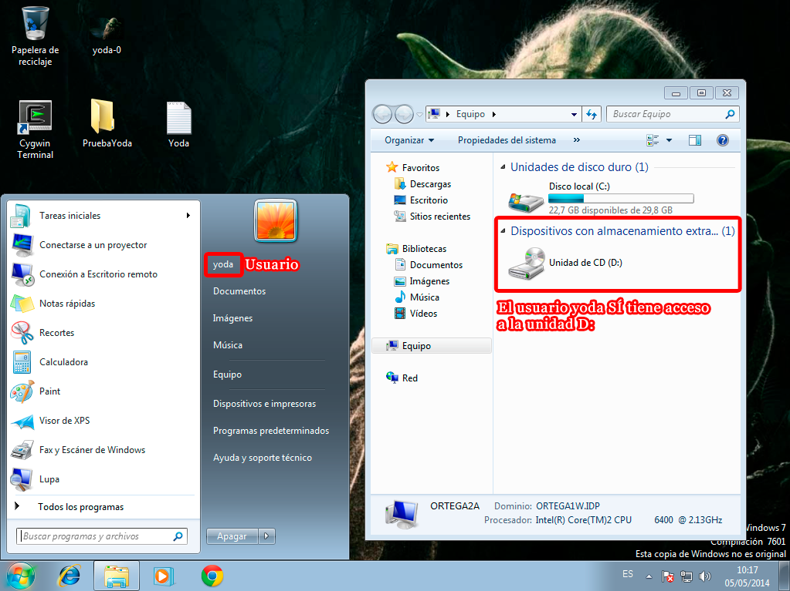
Imágenes 34 y 35: Resultado de habilitar la directiva.
Habilitar Quitar “Conectar a unidad de red” y “Desconectar de unidad de red”
- Ubicación: Configuración de usuario / Plantillas administrativas / Componentes de Windows / Explorador de Windows (User configuration / Administrative Templates / Windows Components / Windows Explorer)
- Configuración de Directiva de grupo: Quitar “Conectar a unidad de red” y “Desconectar de unidad de red” (Remove “Map Network Drive” and “Disconnect Network Drive”)
- Opción Habilitada
- Habilitar la directiva
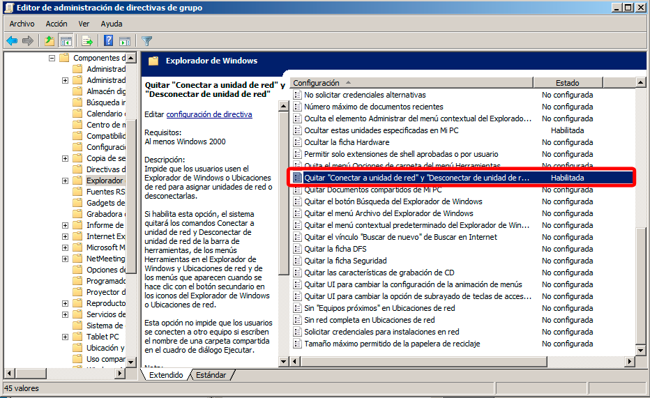
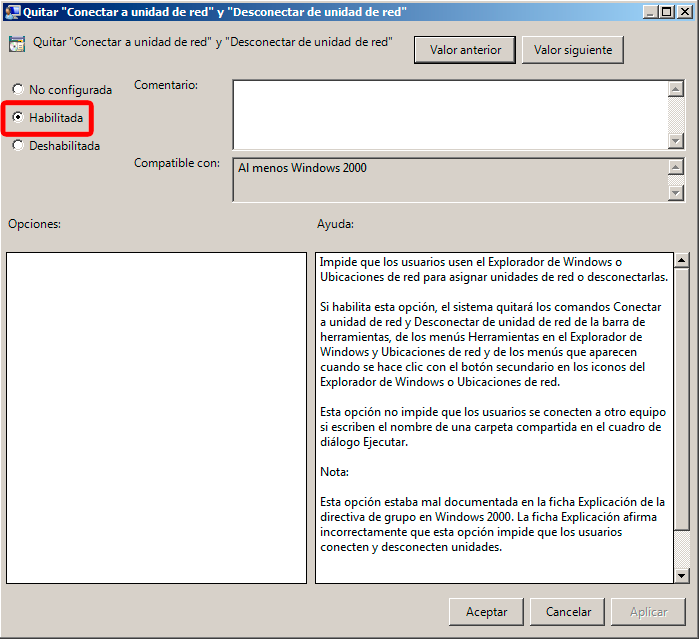
Imágenes 36 y 37: Habilitar la directiva.
Principio del punto 4 | Fin del punto 5 | Índice
5.- Anexo
- En la página 3 del documento "Generacion_usuarios_grupos_y_OU_desde_script.pdf" (disponible en la zona de "Material extra/WinServer"), pone los pasos para crear con comandos de Windows usuarios, gupos y OU's.
Índice
Alejandro Ortega Freire 1ºASIR
Implantación de Sistemas Operativos